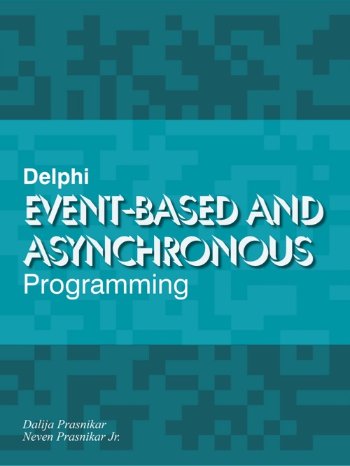

Delphi Event-based and Asynchronous Programming
Writed by : Dalija Prasnikar, Neven Jr Prasnikar
Published date : 28/12/2020
Language :  English
English
Web site : https://dalijap.blogspot.com/2020/11/just-released-ebook-delphi-event-based.html
About Delphi Event-based and Asynchronous Programming
Event-based programming is everywhere. Nowadays, you can hardly write any kind of application without leaning on events and messages.
This simple, yet extremely powerful mechanism is also the cornerstone of asynchronous and multithreaded programming. Without events, we would not know when some task was completed.
But, asynchronous and multithreaded programming consists of more than just handling multiple threads, protecting shared resources, and synchronization. It also includes designing and understanding program flow. That design aspect is often forgotten, taken for granted, and solving all the fine-grained nuances of multithreaded programming hogs the spotlight.
Without understanding asynchronous flow and the bigger picture it can be hard to properly solve all the other issues, including multithreading. What used to be plain spaghetti code, now becomes temporal spaghetti.
You can lose control over your objects, have bits of code creating and releasing them all over the place, even without adding multithreading into the mix. Memory leaks, crashes, and holding references to dead data long after its destruction are perfectly possible even in a singlethreaded environment.
While the starting point of this book is giving a proper introduction to event-based and asynchronous programming flow and design, it also provides the necessary implementation details, explanations and code examples needed to put those designs into practice.
Where to buy ?
If this book is still available for sale, you probably can order it on its website.